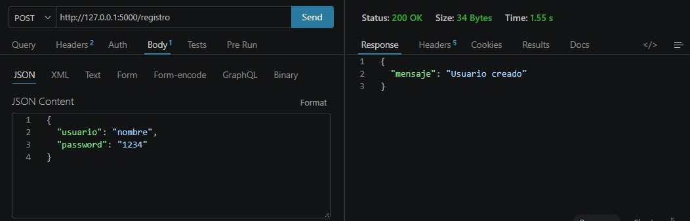
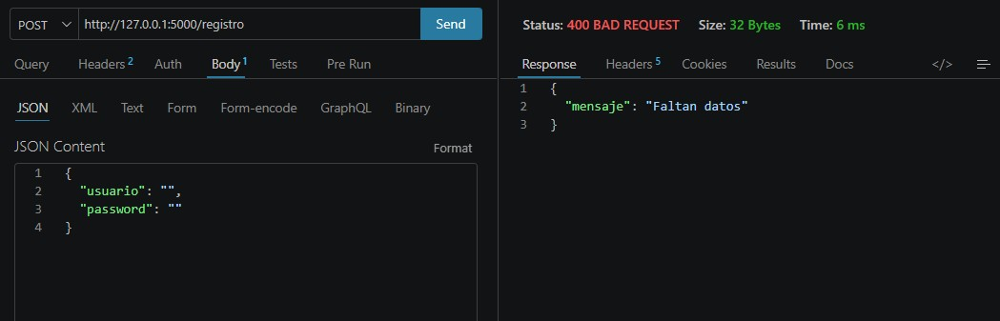
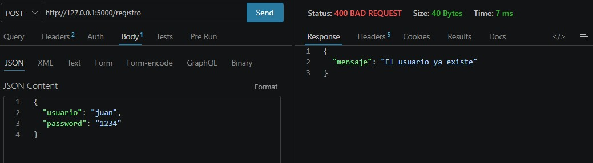
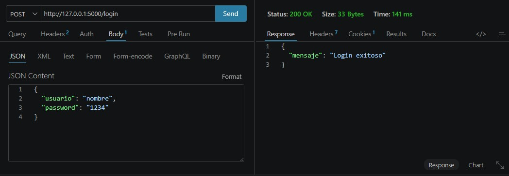
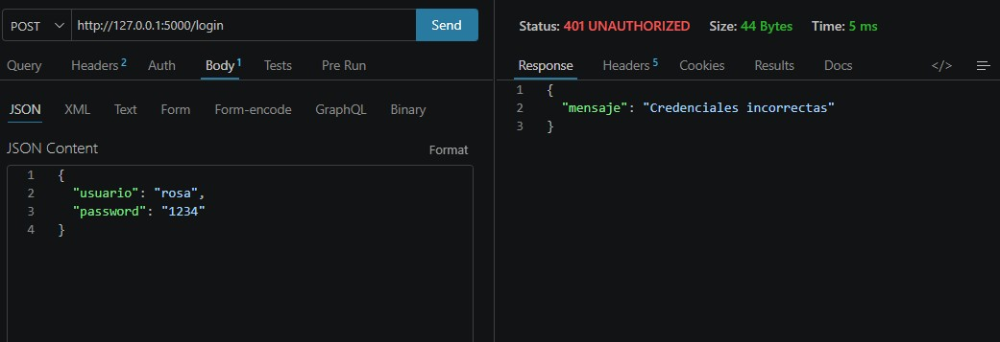
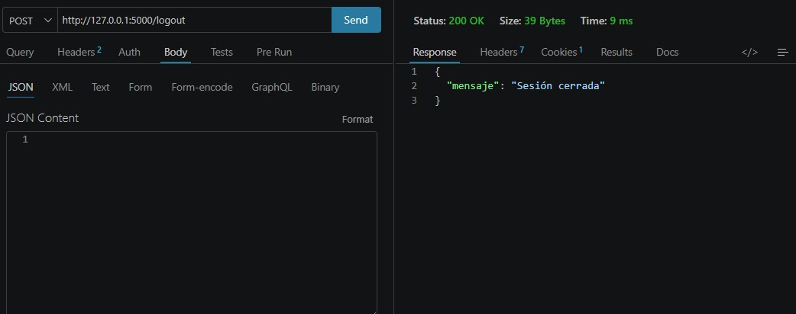
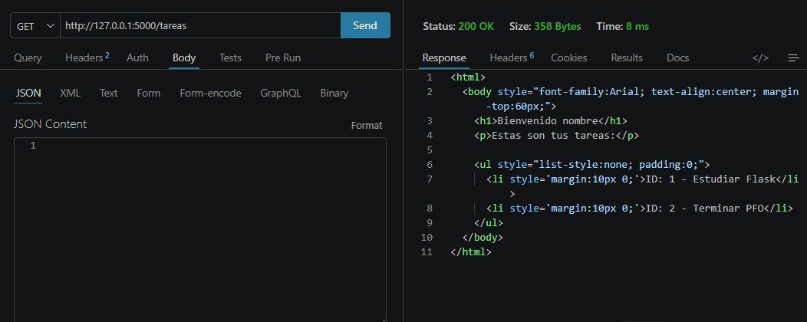
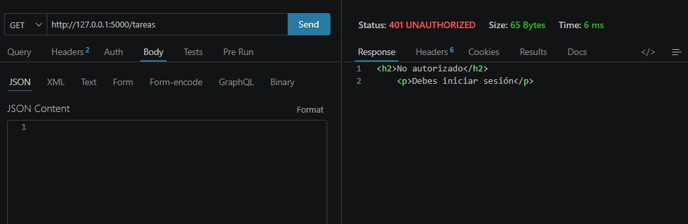
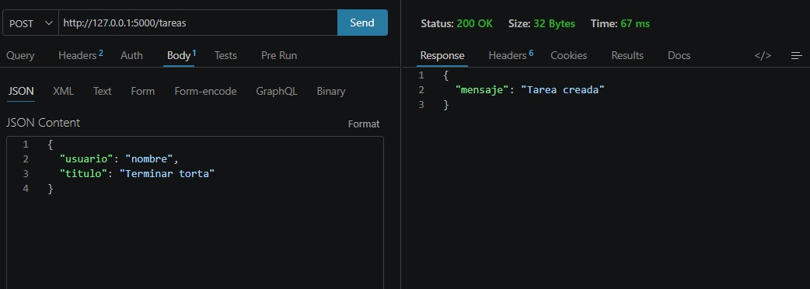

Flask + SQLite + Cliente en Consola
Este sistema implementa una API REST desarrollada en Flask que permite registrar usuarios, autenticarse mediante login, gestionar tareas y almacenar datos en una base de datos SQLite. Las contraseñas se almacenan de forma segura mediante hashing.
Las contraseñas se almacenan utilizando hashing para evitar su exposición en texto plano, aumentando la seguridad en caso de acceso no autorizado a la base de datos.
SQLite se utiliza por su simplicidad, ya que no requiere configuración adicional y permite almacenar datos en un único archivo local, ideal para proyectos académicos.








